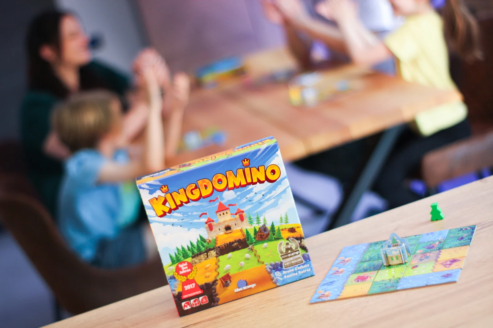
Você escolhe peças de paisagem numa fila, encaixa cada uma no seu reino de 5 por 5 encostando terrenos iguais e vence quem somar mais pontos com territórios de muitos quadrados e muitas coroas.
- Na sua vez, você encaixa a peça que tinha escolhido e põe o seu rei numa peça da nova fila; quem fica com a peça de número mais baixo joga primeiro na rodada seguinte.
- A peça precisa encostar, de lado, num terreno igual ou no castelo, e o reino inteiro tem de caber em 5 por 5; o que não cabe é descartado.
- Cada território vale o número de quadrados vezes o número de coroas: sem coroa, vale zero.
Como você aprende: 3 etapas, da mesa montada à contagem de pontosLeitura do essencial: cerca de 5 min
À vista, só o essencial para jogar. O que abre com + é explicação, exemplo, exercício ou regra de caso especial: abra quando precisar.
Montar a mesa passo a passo
A montagem segue a preparação do manual p. 2, na mesma ordem, com cada ação num passo.
Componentes da caixa (p. 2; nomes da página da PaperGames)
| Componente | Quantidade | Para que serve |
|---|---|---|
| Peças de paisagem | 48 | Os dominós: cada um tem dois quadrados de terreno de um lado e um número do outro |
| Peças de área inicial | 4 | Um quadrado só, onde cada reino começa |
| Castelos | 4 (rosa, amarelo, verde e azul) | Ficam em cima da peça de área inicial e mostram de quem é o reino. Neste guia, "o castelo" é também a peça de área inicial em que ele está |
| Reis de madeira | 8 (2 de cada cor) | Marcam a peça que cada jogador escolheu e a ordem de jogo |
Cada peça de paisagem é numerada no verso p. 2. Os terrenos são seis: campo de trigo (amarelo), lago (azul), floresta (verde-escuro), pastagem (verde-claro, com ovelhas), pântano (bege) e montanha (preto, com minas). Alguns quadrados têm de 1 a 3 coroas desenhadas; são elas que fazem pontos p. 3 e 28.
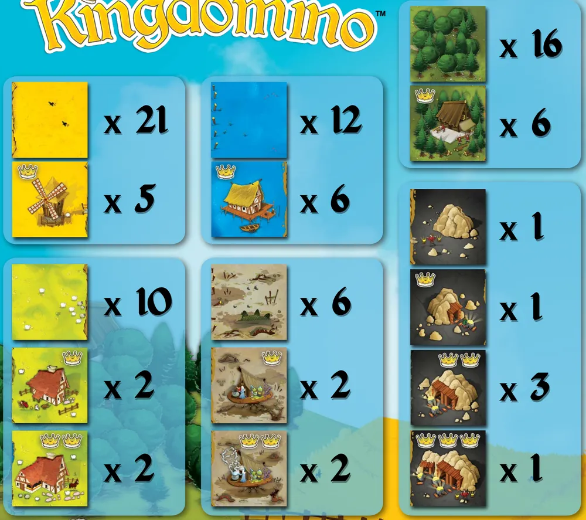
Os passos p. 2
1. Monte os castelos (só na primeira partida). Antes de jogar pela primeira vez, encaixe as partes de papelão dos 4 castelos pequenos p. 2.
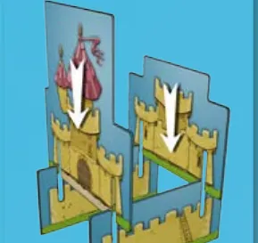
2. Ponha a caixa na mesa, aberta. Ela vai guardar o monte de compra (você o monta no passo 5) e marca o começo das filas p. 2.
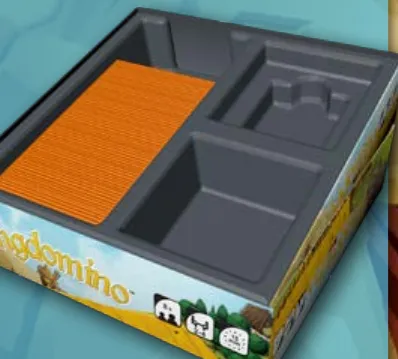
3. Reis. Cada jogador escolhe uma cor. Com 2 jogadores, cada um pega os dois reis da sua cor; com 3 ou 4, cada um pega um rei p. 2.
4. Peça de área inicial e castelo. Cada jogador pega uma peça de área inicial e o castelo da sua cor. A peça vai na mesa, à sua frente, com o desenho para cima, e o castelo fica em cima dela p. 2.
5. Monte de compra. Embaralhe as peças de paisagem e ponha-as em pé na bandeja da caixa, com o número virado para fora: esse é o monte de compra p. 2. Com 2 jogadores, use 24 peças tiradas ao acaso; com 3, use 36; com 4, todas as 48 p. 2. As que sobram ficam de lado, longe da caixa, até o fim da partida, para não se misturarem ao monte (p. 5, parte em francês).
6. A primeira fila (A no manual). Uma fila, neste guia, é uma fileira de peças posta em coluna ao lado da caixa. Pegue as primeiras peças da bandeja, sem olhar, tantas quantos reis estão em jogo (4 com 2 ou 4 jogadores, 3 com 3), e ponha-as numa coluna ao lado da caixa, com o número para cima p. 5 e 17, em ordem crescente: o mais baixo fica sempre mais perto da caixa. Depois, vire cada uma no mesmo lugar, para mostrar os terrenos p. 2.
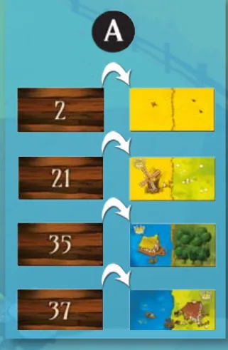
7. A escolha inicial (B no manual). Antes da primeira rodada, e só nessa vez, um jogador junta todos os reis na mão. Um de cada vez, os jogadores tiram um rei da mão, ao acaso, e põem esse rei numa peça livre da fila, a que quiserem; pode não ser o rei da sua cor p. 2 e 17. Cada peça recebe um rei só, então o último rei vai para a peça que sobrou. Com 2 jogadores, cada um acaba com duas peças, uma para cada rei p. 2.
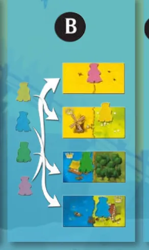
8. A segunda fila (C no manual). Com todos os reis na primeira fila, tire do monte o mesmo número de peças e forme uma segunda coluna ao lado da fila com os reis, também em ordem crescente a partir da caixa, e vire as peças p. 2 e 3. Agora há duas filas: a dos reis e a nova, vazia.
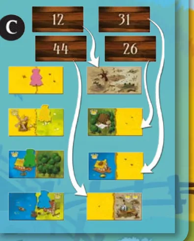
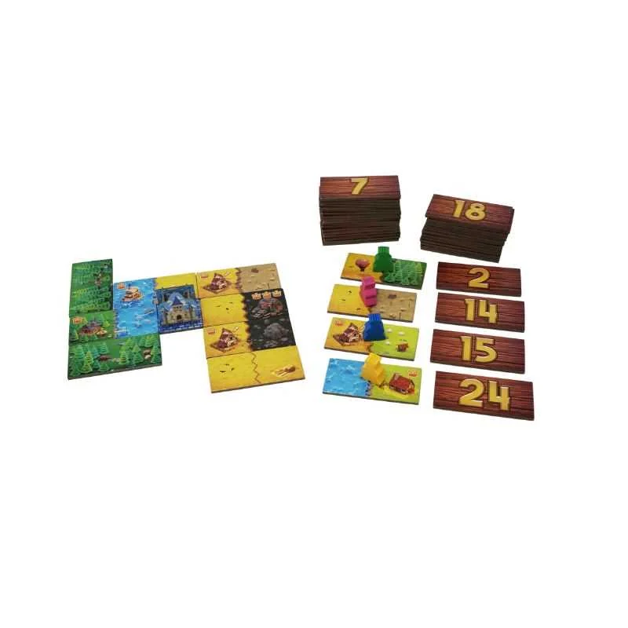
O que muda com o número de jogadores (p. 2 e 3; a última coluna é conta do guia)
| Jogadores | Reis por jogador | Peças de paisagem na partida | Peças em cada fila | Rodadas | Peças que ficam fora |
|---|---|---|---|---|---|
| 2 | 2 | 24 | 4 | 6 | 24 |
| 3 | 1 | 36 | 3 | 12 | 12 |
| 4 | 1 | 48 | 4 | 12 | nenhuma |
Em qualquer caso, pela conta do guia, cada jogador recebe 12 peças: 24 quadrados que, com a peça de área inicial, enchem a grade de 5 por 5 p. 2 e 3.
O que volta para a caixa. Nada das peças de paisagem: as que ficaram fora da partida esperam de lado até o fim p. 5. Voltam, pelo que o guia entende, os reis, castelos e peças de área inicial das cores que ninguém escolheu.
Quem começa. Joga primeiro quem tem o rei na peça da primeira fila mais perto da caixa, a de número mais baixo p. 3.
Antes de começar, confira: castelo sobre a peça de área inicial diante de cada um; os reis certos; o monte com 24, 36 ou 48 peças; a primeira fila em ordem crescente a partir da caixa, com um rei em cada peça; a segunda fila ao lado, virada e sem reis.
Partida de 3 jogadores. Quantas peças de paisagem vão para o monte de compra, e quantas peças tem cada fila?
Com 3 jogadores, usam-se 36 peças tiradas ao acaso, e cada fila tem tantas peças quantos reis em jogo: 3 p. 2.
Comece a jogar em 4 minutos
Meta: em 4 minutos de leitura, montar a mesa e jogar a sua primeira vez sem abrir o manual.
A ideia do jogo
Cada jogador constrói um reino de 5 por 5 quadrados encaixando peças de paisagem como num dominó: cada peça precisa encostar num terreno igual. No fim, cada área de terreno igual, o território, vale o número de quadrados vezes o número de coroas que tem (p. 2 a 4). A peça que você escolhe agora decide em que lugar da fila você joga na próxima rodada.
Monte a mesa
Resumo da seção "Montar a mesa passo a passo", acima p. 2.
- Cada um com a peça de área inicial e o castelo à frente; 2 reis por jogador com 2 jogadores, 1 com 3 ou 4.
- Monte de compra na caixa: 24, 36 ou 48 peças, conforme 2, 3 ou 4 jogadores.
- Primeira fila ao lado da caixa, em ordem crescente, virada para os terrenos. Escolha inicial: os reis são sorteados, e cada um vai para uma peça.
- Segunda fila ao lado da fila com os reis, em ordem crescente, virada, sem reis.
Seu primeiro turno
Quem tem o rei mais perto da caixa joga primeiro e faz duas coisas, nesta ordem p. 3:
- Encaixe a peça do seu rei no seu reino. Ela precisa encostar na peça de área inicial (que aceita qualquer terreno) ou, em outra peça de paisagem, num quadrado do mesmo terreno, de lado ou em cima e embaixo, nunca só pelo canto (na diagonal).
- Escolha uma peça da nova fila e ponha o seu rei nela.
Depois joga o rei da segunda peça, e assim por diante. Quando todos jogaram, uma nova fila sai do monte e fica no lugar da fila que esvaziou, ao lado da fila com os reis p. 3. Com 2 jogadores, cada rei joga na vez da sua peça p. 3.
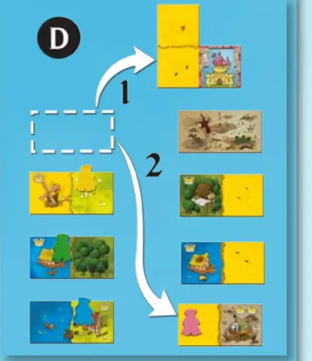
Ainda não precisa saber
O limite da grade de 5 por 5, o descarte de peças e a última rodada: etapa 2. Como contar os pontos, o desempate e as regras adicionais: etapa 3.
Como a partida acaba: quando as peças acabam
A partida termina quando o monte acaba e as últimas peças são encaixadas, depois de 12 rodadas com 3 ou 4 jogadores ou 6 com 2. Ganha quem tiver mais pontos p. 3 e 4.
Prefere ver? O vídeo abaixo é a partida completa que a página da PaperGames indica para aprender o jogo. Ele complementa este guia; em caso de diferença, vale o manual.
0Antes de tudo: o que é este jogoOpcional
Abrir esta seção
Kingdomino é um jogo de Bruno Cathala para 2 a 4 jogadores, com cerca de 15 minutos de partida; o manual indica a partir de 8 anos p. 2, e a página da PaperGames, a partir de 7. Cada jogador é um rei que expande as suas terras encaixando peças de paisagem, como num dominó, até montar um reino de 5 por 5 quadrados p. 2.
A cada vez, você decide duas coisas: onde encaixar a peça que já tem e qual peça escolher na nova fila. A segunda escolha também define quando você joga na rodada seguinte.
1Como este guia ensinaOpcional
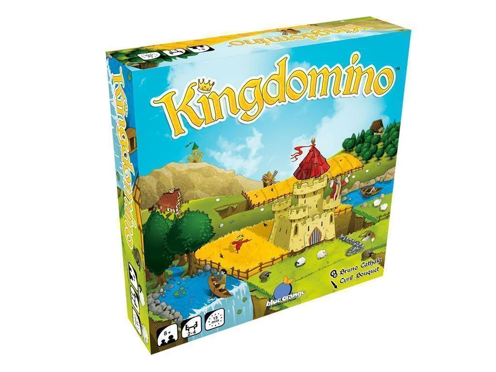
Abrir esta seção
Três etapas, na ordem da partida: escolher e encaixar peças; respeitar a grade de 5 por 5 e chegar ao fim; contar os pontos. Cada uma tem Para entender, Passo a passo, regras de caso especial à parte e tarefas com ajuda decrescente: exemplo resolvido, complete e sua vez. Toque numa opção para ver a certa e a explicação. No fim, uma avaliação diz o que reler, e a folha de consulta vai para a mesa.
2Etapa 1: escolher e encaixar peças
Por que funciona assim
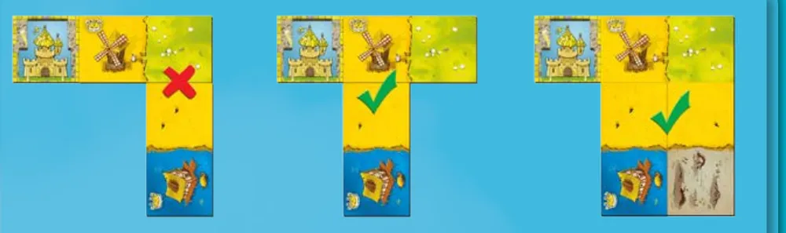
Sobre a edição: Um encosto certo basta
Sobre a edição: Quem põe o rei sorteado
Regra adicional: Peça promocional "As Últimas Coroas"
Dica: Sugestão: olhe o número antes do desenho
Ver um exemplo resolvido
Pratique esta etapa: exercícios com respostas
3Etapa 2: a grade de 5 por 5 e o fim da partida
Por que funciona assim
Sobre a edição: Descartar de propósito
Sobre a edição: Só encaixar, na última vez
Ver um exemplo resolvido
Pratique esta etapa: exercícios com respostas
4Etapa 3: contar os pontos
Por que funciona assim
Regra adicional: Dois territórios do mesmo terreno
Regra adicional: Desempate
Sobre a edição: "Maior território" é um território só
Sobre a edição: O castelo não pontua
Ver um exemplo resolvido
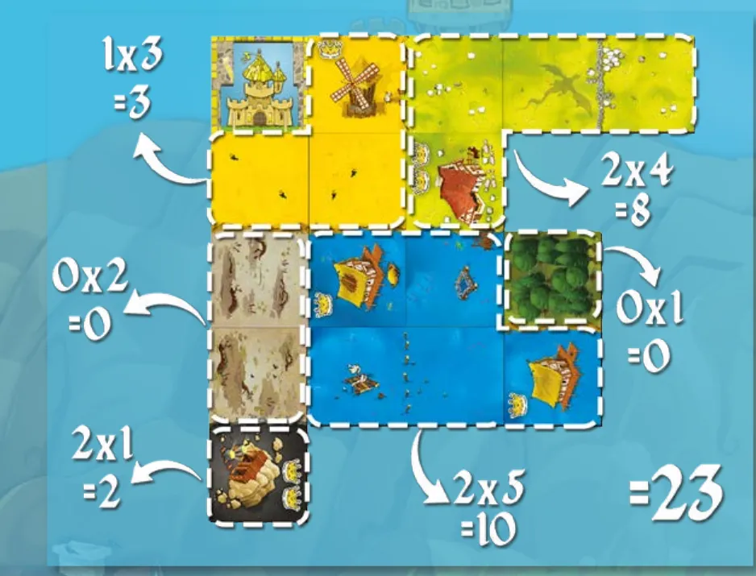
Regras adicionais. O manual traz quatro regras opcionais, que se combinam como a mesa quiser p. 4; os nomes são os da parte em português de Portugal p. 19.
Regra adicional: Dinastia
Regra adicional: O Reino Central
Sobre a edição: Centro de um reino incompleto
Regra adicional: Harmonia
Regra adicional: O Poderoso Duelo
Pratique esta etapa: exercícios com respostas
5Situações especiaisOpcional
Abrir esta seção
Sobre a edição: Reino incompleto
Sobre a edição: Nomes dos terrenos
6Avaliação finalOpcional
Abrir esta seção
Responda sem consultar. Cada resposta diz o que reler.
1. Partida de 2 jogadores. Quantas peças vão para o monte de compra, e quantos reis cada um usa?
Com 2 jogadores, 24 peças tiradas ao acaso e dois reis por jogador p. 2. Releia a montagem.
2. Na fila, os reis estão nas peças 6, 13, 22 e 47. Quem joga primeiro?
A ordem vai da peça mais perto da caixa, a de número mais baixo p. 3. Releia a etapa 1.
3. A sua peça de floresta e lago só encosta, fora do castelo, num campo de trigo. Ela pode entrar ali?
Fora da peça de área inicial, a peça precisa de pelo menos um encosto de terreno igual, de lado p. 3. Releia a etapa 1.
4. A peça não cabe no seu 5 por 5 de jeito nenhum. O que acontece?
Todas as peças precisam caber em 5 por 5; a que não cabe é descartada p. 3. Releia a etapa 2.
5. Lago de 4 quadrados com 2 coroas e floresta de 6 quadrados sem coroa. Quanto valem juntos?
4 x 2 = 8; 6 x 0 = 0 p. 3 e 4. Releia a etapa 3.
7Para consultar durante a partida
Preparação
| Jogadores | Reis por jogador | Peças no monte | Peças por fila | Rodadas |
|---|---|---|---|---|
| 2 | 2 | 24 | 4 | 6 |
| 3 | 1 | 36 | 3 | 12 |
| 4 | 1 | 48 | 4 | 12 |
Escolha inicial (antes da primeira rodada): os reis são sorteados da mão de um jogador, e quem tira um rei o põe numa peça livre da primeira fila; depois, segunda fila ao lado da fila com os reis.
Uma rodada
- Ordem: da peça mais perto da caixa (número mais baixo) até a última.
- Na sua vez: encaixe a peça do seu rei; depois ponha o rei numa peça livre da nova fila.
- Com 2 jogadores, cada rei joga na vez da sua peça.
- Fila velha vazia: nova fila do monte no lugar dela, ao lado da fila com os reis, em ordem crescente a partir da caixa, terrenos à mostra.
Encaixe: encostar no castelo (aceita tudo) ou num quadrado de terreno igual, de lado; só pelo canto (na diagonal) não vale; um encosto certo basta. Tudo dentro de 5 por 5, castelo incluído. Não cabe: descarte, sem pontos.
Fim: monte vazio, última fila; na última rodada, só encaixar.
Pontos: cada território (terreno igual ligado de lado) vale quadrados x coroas; sem coroa, 0. Desempate: maior território; depois, mais coroas; depois, vitória dividida.
Opcionais: Dinastia (3 partidas); O Reino Central (+10, castelo no centro); Harmonia (+5, nenhum descarte); O Poderoso Duelo (2 jogadores, 48 peças, 7 por 7).
8Fontes
- Blue Orange. Kingdomino: Rules / Règles / Regeln / Regole / Reglas / Regras / Spelregels / Правила (livreto multilíngue, © 2016, arquivo "KINGDOMINO_rules_ML.pdf", 28 páginas, PDF criado em 21/02/2017). Partes usadas: inglês (p. 2 a 4), francês (p. 5 a 7), alemão (p. 10, só o desempate), português de Portugal (p. 17 a 19) e a tabela de terrenos p. 28. https://blueorangegames.eu/wp-content/uploads/2017/04/KINGDOMINO_rules_ML.pdf, ligado em https://blueorangegames.eu/en/games/kingdomino/. Consultado em 08/11/2026.
- PaperGames. Página de Kingdomino (componentes, ficha técnica, peça promocional "As Últimas Coroas" e o link do manual brasileiro, que exige login no OneDrive e não pôde ser lido). https://papergames.com.br/kingdomino/ (consultada em 06/11/2026) e https://papergames.com.br/kingdomino-as-ultimas-coroas/ (consultada em 08/11/2026).
- Vídeo "Covil dos Jogos - Review e Gameplay Kingdomino", canal Covil dos Jogos (título e canal pelo oEmbed do YouTube), indicado na página da PaperGames: https://www.youtube.com/watch?v=X7BaL2TkF9k. Não baixado.
Regras conferidas no manual oficial da Blue Orange (livreto multilíngue "Rules", © 2016, arquivo baixado do site da editora), na parte em inglês, com as partes em francês, alemão (só o desempate, p. 10) e português de Portugal do mesmo livreto para tirar dúvidas de tradução. O manual da edição brasileira, da PaperGames, fica num link que exige login e não pôde ser lido. Os nomes das peças seguem a página da PaperGames; os outros termos são traduções deste guia e podem estar diferentes na caixa brasileira. As ilustrações são do manual de 2016 e podem ter arte diferente da sua caixa.